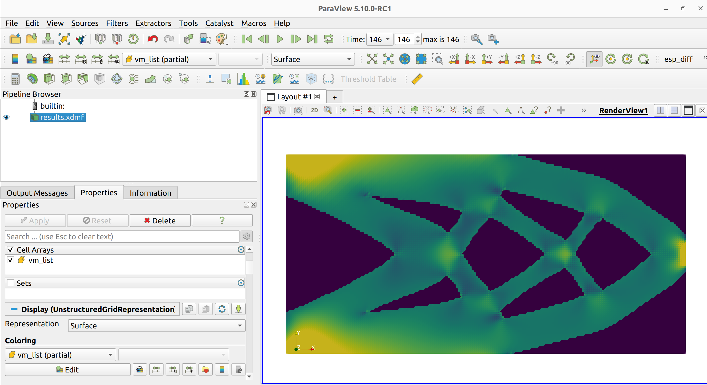

Quick Start¶
1. Execution¶
OptiCut defaults to a Compliance Minimization problem using the CutFEM integration scheme. Ensure the Conda environment is active, then execute the main script from the repository root:
cd OptiCut
conda activate opticut-env
python src/main.py src/parameters/param_compliance.txt
To run a different problem, pass the path to another parameter configuration file as an argument:
# Von Mises stress minimization
python src/main.py src/parameters/param_VonMises.txt
# 3D compliance minimization
python src/main.py src/parameters/param_compliance_3D.txt
HPC Execution (MPI Parallelization)¶
OptiCut is fully parallelized. For large-scale meshes or High-Performance Computing (HPC) environments, you can accelerate the optimization by distributing the workload across multiple CPU cores using MPI:
mpirun -n 4 python src/main.py src/parameters/param_compliance.txt
(where -n 4 specifies the number of MPI processes to use)
Expected Terminal Output¶
During execution, OptiCut logs the optimization state at each iteration to the terminal. A typical session looks as follows:
##########################################
##### Initialization of the problem #####
##########################################
iteration number : 1
RAM used: 0.412 GB
cost previous = 1.2340e-03
cost = 1.1987e-03
C(Ω) = 0.5021
criterion of convergence = 0.02806
iteration number : 2
RAM used: 0.413 GB
cost previous = 1.1987e-03
cost = 1.1654e-03
C(Ω) = 0.4993
criterion of convergence = 0.02778
...
Optimization completed successfully
where C(Ω) is the current constraint value (e.g., volume fraction) and the convergence criterion is the relative change in the objective function between two successive iterations.
2. Algorithm Pipeline¶
During execution, the solver performs the following sequential operations iteratively:
Initialization: Generation of the Eulerian background mesh and initial level-set function \(\phi(x)\).
State Resolution: Solution of the linear elasticity primal and dual problems (using CutFEM or Ersatz).
Sensitivity Analysis: Computation of the shape gradients for the objective and constraint functions.
Augmented Lagrangian Step: Update of the Lagrange multipliers \(\lambda\) and penalty parameters \(\mu\) to handle constraints using the Augmented Lagrangian Method.
Domain Evolution: Advection of the level-set via the Hamilton-Jacobi equation using the normal velocity field.
3. Post-Processing¶
The optimization states and physical fields are sequentially exported in XDMF format to the res/ directory.
Requirement
Visualization requires ParaView (version 5.10 or later), which can be downloaded free of charge from the official website.
To visualize the computational results using ParaView:
Load the single
res/results.xdmffile. It contains the complete time-series of the optimization, allowing you to observe both the initial zero-contour geometry and the evolution of the iterative physical fields (displacement, Von Mises stress, structural boundaries).


Figure 1 ParaView screenshot showing the Von Mises field of the optimized structure.¶
Output Files¶
In addition to the visual .xdmf fields, the framework automatically saves several text files (.txt) in the res/ directory containing time-series data of your simulation:
File |
Description |
|---|---|
|
Objective function value at each iteration |
|
Constraint value (e.g., volume fraction) at each iteration |
|
Maximum Von Mises stress in the structure |
|
Evolution of the Augmented Lagrangian multipliers |
|
Total RAM usage per iteration |
|
Per-process RAM usage (useful for MPI runs) |
Verifying the Installation with the Test Suite¶
To confirm that the full software stack is correctly configured, run the built-in test suite:
pytest tests/
To display the name of each individual test as it runs, use the verbose flag:
pytest tests/ -v
To also capture print statements and logs (useful for debugging a failing test):
pytest tests/ -v -s
To run a single test file or a specific test function:
# Run a single file
pytest tests/test_solvers.py -v
# Run a specific test by name
pytest tests/test_solvers.py::test_cutfem_solver -v
A successful installation produces output of the form:
============================= test session starts ==============================
platform linux -- Python 3.12.13, pytest-9.1.1, pluggy-1.6.0
configfile: pytest.ini
collected 21 items
tests/test_alm.py .... [ 19%]
tests/test_levelset.py .. [ 28%]
tests/test_optimization_loop.py ... [ 42%]
tests/test_problem_sensitivity.py ... [ 57%]
tests/test_regression.py ... [ 71%]
tests/test_solvers.py ... [ 85%]
tests/test_velocity.py ... [100%]
======================= 21 passed in 10.17s ================================
Performance Benchmark¶
On a modern laptop (e.g., Intel Core i9-13900H), the compliance optimization with a fine mesh (\(h = 0.01\)) completes 126 iterations in approximately 2 minutes. Note that this time includes the I/O overhead of recording all mechanical fields to disk at every iteration (this overhead can be reduced by decreasing the output frequency via the save_results parameter).
4. Next Steps¶
Depending on your objectives, the following sections of the documentation are recommended:
Objective |
Recommended section |
|---|---|
Run a new benchmark problem |
|
Modify geometry, mesh size, or material parameters |
|
Define a new optimization problem |
|
Understand the mathematical formulation |
|
Extend the code with new physics |